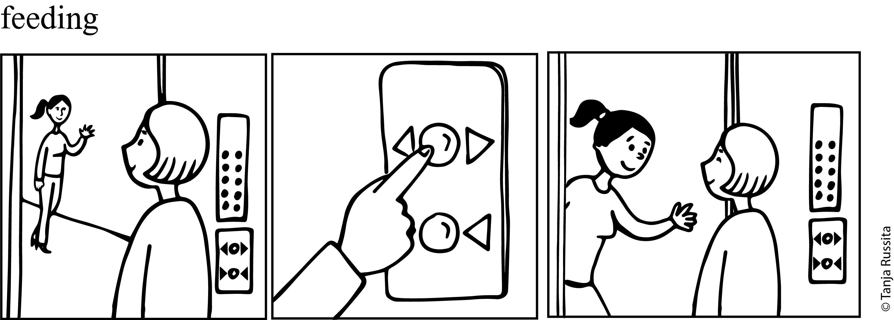
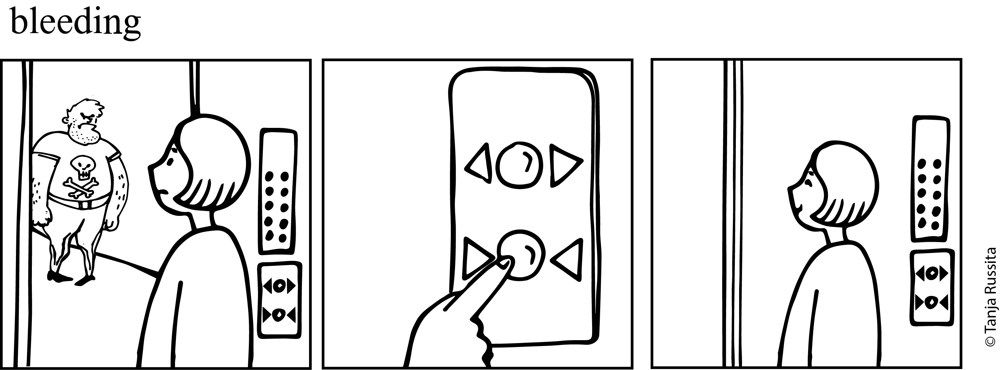
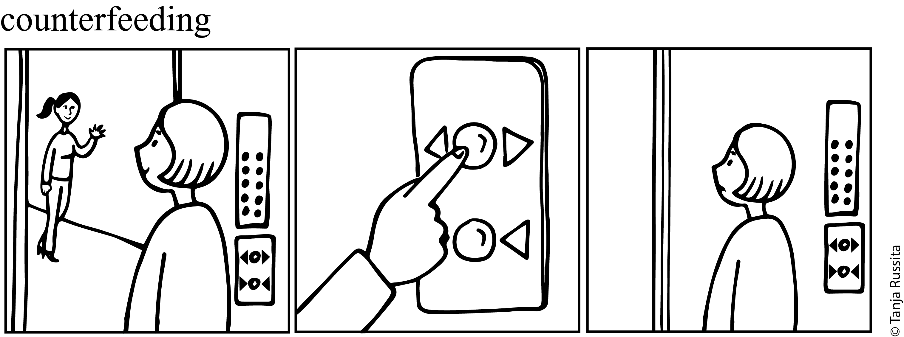
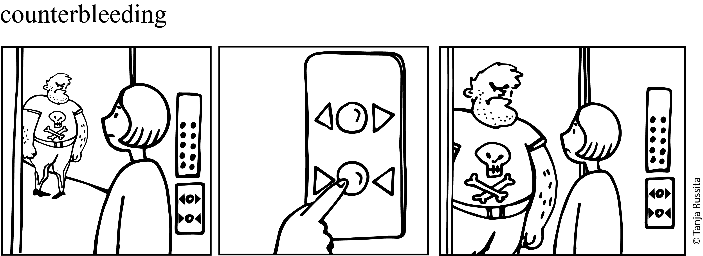

3 Введение в twol: (мор)фонология
3.1 Фонологическое введение
Преобладающая фонологическая теория в XX веке — генеративная фонология (Chomsky и Halle 1968). Согласно этой теории существует два представления: глубинное (underlying/phonological representation) и поверхностное (surface form, phonetic representation). Фонология в этой теории сводится к набору линейено упорядоченных правил, которые применяются циклически, преобразуя результат работы синтаксической деревации в фонетические цепочки.
- глубинное представление > фонологическое правило 1 > фонологическое правило 2 > … > поверхностное представление.
Из-за того, что правила в этой теории строго упорядочены возникают случаи, когда правила взаимодействуют друг с другом. Классификация таких случаев приводится в работе (Kiparsky 1982 (1968)):
- питающий порядок (feeding). Так называют порядок, при котором применение одного правила увеличивает количество контекстов применение другого правила, так что другое правило срабатывает. 1
- блокирующий порядок (bleeding). Так называют порядок, при котором применение одного правила уменьшает количество контекстов применения другого правила, так что другое правило не срабатывает. 2
- противопитающий порядок (counterfeeding). Так называют порядок, при котором применение одного правила увеличивает количество контекстов применение другого правила, однако другое правило не срабатывает.
- противоблокирующий порядок (counterbleeding). Так называют порядок, при котором применение одного правила уменьшает количество контекстов применения другого правила, однако другое правило все равно срабатывает.
Вот комиксы, которые по нашей задумке должны дополнительно иллюстрировать разницу между разными порядками.




3.2 Двухуровневая фонология/морфология
Двухуровневая фонология/морфология (two level morphology) была разработана в диссертации (Koskenniemi 1983). Стоит отметить, что мы используем данный формализм для моделирования (мор)фонологических правил, однако данный формализм называют двухуровневой морфологией (в том числе и сам автор). Вообще, еще в 1972 вышла диссертация (Johnson 2019), в которой автор указывал на некоторые недостатки последовательности фонологических правил, которые были приняты в генеративной фонологии, а также доказывал, что любую последовательность правил можно моделировать при помощи трансдьюсера, однако эта работа осталась незамеченной.
В рамках двухуровневой фонологии/морфологии:
- правила — посимвольные ограничения на поверхностное представление, которые применяются параллельно.
- правила могут оперировать единицами глубинного представления, поверхностного представления или одновременно обоих.
Использование ограничений, вместо правил, чуть позже возникла в фонологии в виде Теории оптимальности (OT, (Prince и Smolensky 1994)), однако в рамках OT предпалагаются, что ограничения носят универсальный характер и есть во всех языках, в то время, как ограничения двухуровневой фонологии/морфологии — имеют частный внутриязыковой характер.
3.3 Программа twol
В данном разделе мы будем обсуждать синтаксис twol. Данный раздел основан на (Beesley и Karttunen 2003).
3.4 Техническое введение
Мы будем использовать программу hfst-twolc. Чтобы избежать сложностей на начальных этапах курса, мы решили вначале познакомиться с синтаксисом twol и попробовать описывать разные языковые явления, не затрудняя всех установкой и запуском нужных программ у себя на компьютере.
- Для начала работы следует, как и раньше, скачать
Makefile:
```{shell}
$ curl -s https://raw.githubusercontent.com/agricolamz/2025_morphological_transducers/refs/heads/main/task_tests/Makefile -o Makefile; make
```- дальше, как и раньше, следует создадать в коллабе или у себя на компьютере (если у вас Linux), файл с названием
task.lexd. В Google Colab для этого достаточно вставить первой строкой кодового блока%%writefile task.lexd. Вот пример такого файла:
```{lexd}
PATTERNS
Noun (Suffix[-adj] | (Suffix[adj] Inflection))?
LEXICON Noun
ночь
печь
LEXICON Suffix
<dim>:ка
<adj>:н[adj]
LEXICON Inflection
<m><sg><nom>:ой
```- нововведением является возможность создания файла с названием
task.twol, в котором будет содержаться код для обработки (мор)фонологии. Не забудьте вставить%%writefile task.twolв Google Colab. Вот пример такого файла:
```{twol}
Alphabet
а е й к н о п ч ь ь:0;
Rules
"чк чн пишется без ь"
ь:0 <=> _ к;
_ н;
```- После того, как вы установили нужные программы и создали файлы, как и раньше, можно посмотреть формы и разборы, которые генерируются трансдьюсером (не забудьте поставить восклицательный знак перед
makeв Google Colab):
```{shell}
$ make forms
ночь<dim>:ночка
ночь<adj><m><sg><nom>:ночной
ночь
печь<dim>:печка
печь<adj><m><sg><nom>:печной
печь
```- Кроме того можно посмотреть анализ/генерацию конкретных форм (не забудьте поставить восклицательный знак перед
makeв Google Colab):
```{shell}
$ make analysis FORM="печка"
hfst-lookup: Warning: It is not possible to perform fast lookups with OpenFST, std arc, tropical semiring format automata.
Using HFST basic transducer format and performing slow lookups
> печка печь<dim> 0,000000
``````{shell}
$ make generation FORM="ночь<adj><m><sg><nom>"
hfst-lookup: Warning: It is not possible to perform fast lookups with OpenFST, std arc, tropical semiring format automata.
Using HFST basic transducer format and performing slow lookups
> ночь<adj><m><sg><nom> ночной 0,000000
```- Как и раньше, получившийся трансдьюсер можно протестировать:
```{shell}
$ make test_03_01
```3.5 Примеры чередований
- ассимиляция
- диссимиляция
- гармония
- ослабление
- усиление
- фузия
- расщепление
- элизия
- эпентеза
- чеширизация
- метатеза
- редупликация
Вот пример питающего порядка из бразильского португальского (индоевропейские).
правило форма транскрипция глосса палатализация bato [bátu] бить-1sg палатализация bate [bátʃi] бить-3sg палатализация ardo [áɾdu] жечь-1sg палатализация arde [áɾdʒi] жечь-3sg эпентеза i pacto [pákitu] соглашение эпентеза i captar [kapitáɾ] взять в плен эпентеза i psicologia [pisikoloʒíɐ] психология А вот взаимодействие правил:
↩︎/kaptáɾ/
взять в плен/áɾdi/
жечь-3sg/advɛ́χsu/
враждебный/futbɔ́w/
футболэпентеза I kapitáɾ — adivɛ́χsu futibɔ́w палатализация — áɾdʒi adʒivɛ́χsu futʃibɔ́w Вот пример питающего порядка из литовского (индоевропейские).
правило транскрипция перевод эпентеза i [at-koːpʲtʲi] прийти эпентеза i [atʲi-tʲeisʲtʲi] присудить эпентеза i [ap-kalʲbʲetʲi] оговорить эпентеза i [apʲi-putʲi] подгнить озвончение [at-praʃʲiːtʲi] спросить озвончение [ad-gautʲi] вернуть озвончение [ap-ʃaukjtji] объявить озвончение [ab-gautji] обмануть А вот взаимодействие правил:
↩︎/ap-putʲi/
подгнить/at-gautʲi/
вернуть/at-duotʲi/
отдать/ap-bʲekʲtʲi/
обежатьэпентеза i apʲi-putʲi — atʲi-duotʲi apʲi-bʲekʲtʲi озвончение — ad-gautʲi — —